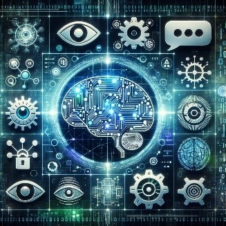

Techniques used in AI
Techniques used in artificial intelligence encompass a diverse set of methodologies  tailored to enable machines to simulate human-like intelligence. These techniques include machine learning for pattern recognition, deep learning for complex decision-making, natural language processing for understanding human language, and computer vision for image analysis. Reinforcement learning and neural networks further enhance AI's capability to learn from experience, adapt to new data, and perform tasks with increasing accuracy and efficiency. Artificial Intelligence (AI) employs a variety of techniques, each specialized for different tasks: Machine Learning (ML): Central to AI, ML algorithms enable systems to automatically learn and improve from experience. This encompasses supervised, unsupervised, and reinforcement learning, each suited for different types of data and learning scenarios. Natural Language Processing (NLP): NLP techniques allow machines to understand and interact using human language. This involves tasks like text translation, sentiment analysis, and chatbot interactions, leveraging both linguistic rules and statistical methods. Computer Vision: This technique empowers machines to interpret and process visual data from the world, such as images and videos. It's used in facial recognition, object detection, and image classification, often relying on deep learning models like Convolutional Neural Networks (CNNs). Neural Networks and Deep Learning: Mimicking the human brain's structure, neural networks are a series of algorithms that detect underlying relationships in data. Deep learning, a subset of ML, involves using large neural networks with many layers to analyze complex patterns, particularly effective in areas like speech recognition and image processing. Robotics: While not exclusively AI, robotics often integrates AI techniques to enable autonomous decision-making in robots, enhancing their ability to interact with the physical world.